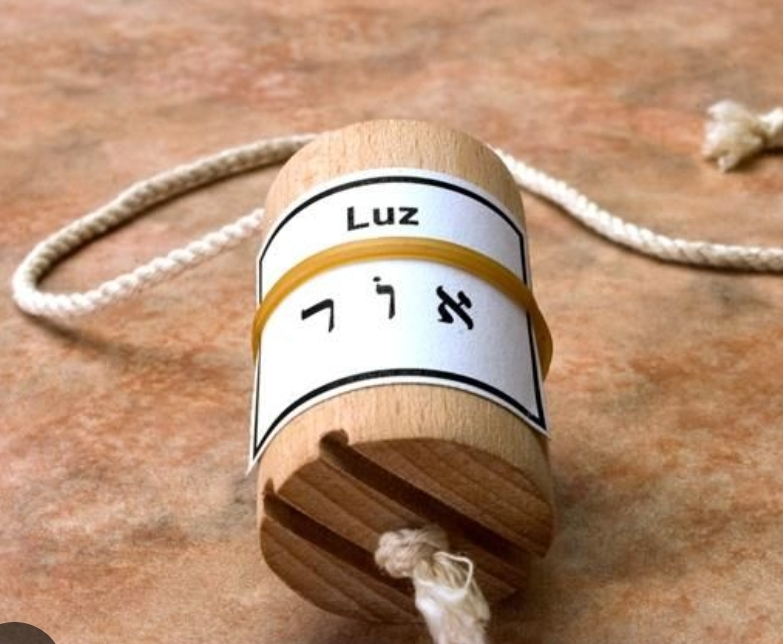
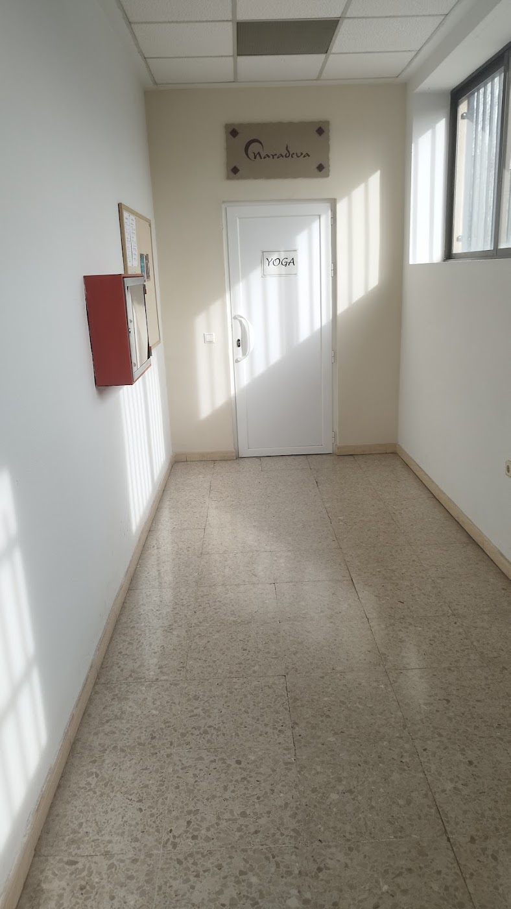

Masajes terapéuticos y relajantes, quiromasaje, shiatsu y reflexología con Nieves, dentro del Centro de Yoga Sudharma en la avenida de Europa. Cita previa por la mañana, a mediodía y por la tarde.
★★★★★5,0 · 29 reseñas en GoogleNieves sabe lo que necesitas en cada momento: descarga de cervicales y trapecio, masajes relajantes y terapias para equilibrar cuerpo y mente, aliviar el estrés, la ansiedad o el insomnio.
Descarga y alivio de tensión.
Desconecta de verdad.
También en San Martín de la Vega.
29 reseñas.
Todo organizado por grupos, para que encuentres lo que buscas en segundos.
Te esperamos dentro del Centro de Yoga Sudharma, en la avenida de Europa, 2 (Centro Comercial Europa).


5,0 de 5 estrellas · 29 reseñas
"Tenía muchísima carga en el trapecio y las cervicales, me dolía desde la nuca hasta la cabeza, y con un solo masaje me descargó muchísimo toda esa parte. Tiene unas manos increíbles."
Paqui L."Necesitaba un masaje y me hablaron de Nieves. Mejoré bastante, desde entonces es la única masajista de la que me fío. Sus masajes tanto terapéuticos como relajantes son especiales."
Marta G."Llevo 6 meses yendo a la consulta de Nieves y estoy súper contenta con sus masajes y terapias. Es una gran profesional que siempre sabe qué necesitas en cada momento."
Lorena M.Escríbenos por WhatsApp o llama a Nieves.
Centro de Yoga Sudharma, Av. de Europa, 2
Centro Comercial Europa, planta G
28943 Fuenlabrada, Madrid